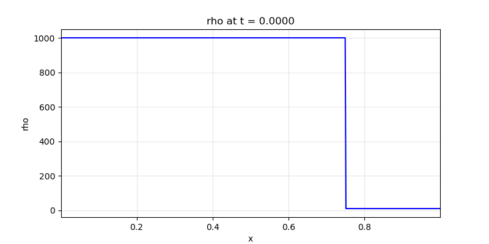
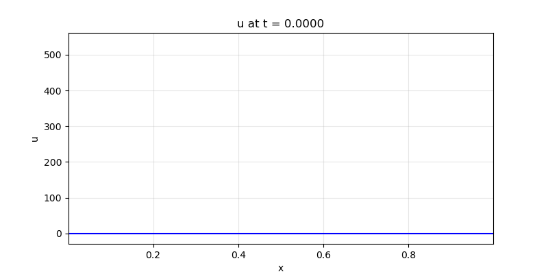
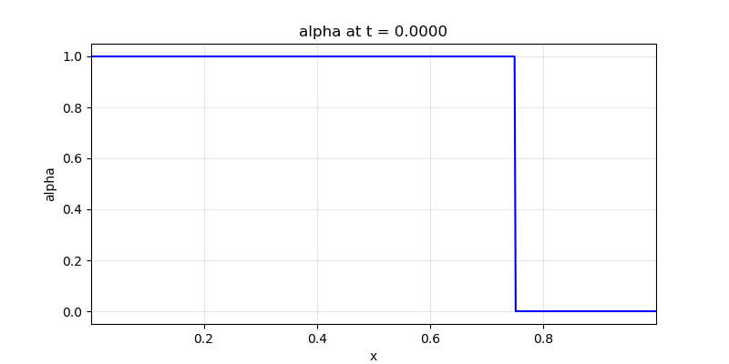

water_air_shock_tube_1d
Description
Two-phase water-air shock tube using the 5-equation model. Wood's formula for mixture sound speed, AUSM+UP flux with v_riem, corrective α term, post-step normalization. At t=2.4×10⁻⁴ s: water (ρ=1000, p=10⁹) left, air (ρ=10, p=10⁵) right.
How to run
python run.py unit_tests/water_air_shock_tube_1d.yamlConfig summary
- Domain: x ∈ [0, 1], 500 points
- Time: dt = 2×10⁻⁸, 12000 steps (t_final = 2.4×10⁻⁴ s)
- Physics: euler mode, two_phase_model: 5eq
- Phase 1 (water): γ=4.4, p_∞=6×10⁸
- Phase 2 (air): γ=1.4, p_∞=0
- IC: Riemann at x=0.75 — Left: water (ρ=1000, α=1); Right: air (ρ=10, α=0)
- Monitors: console, gif (rho, u, p, alpha), txt
Output
Animated GIFs for density, velocity, pressure, and volume fraction.
Density (ρ)

Velocity (u)

Pressure (p)

Volume fraction (α)
